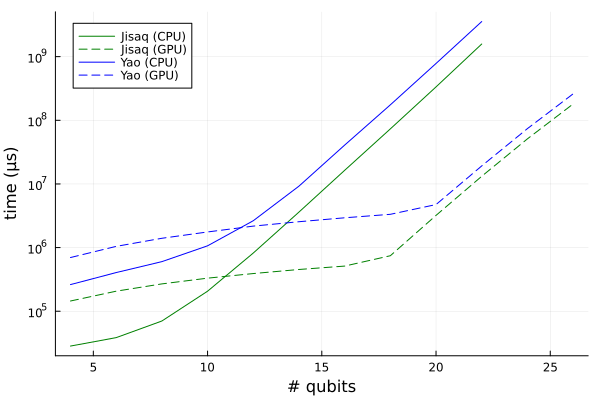
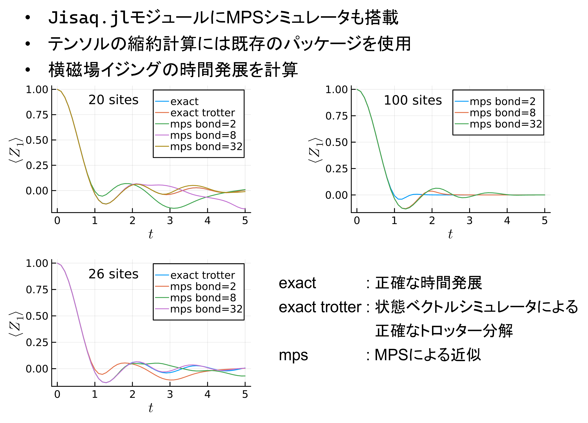

概要
Jisaq.jl（github）：量子回路シミュレータ目的：
- 状態ベクトルシミュレータの高速な実装を理解する
- MPSの実装を理解する
- CUDA.jlを用いたGPUのカーネルプログラミングを理解する
- Juliaのパッケージの作り方を理解する
- 願わくば実用に耐える量子回路シミュレータにしたい

回路は1次元横磁場ハイゼンベルグモデル $$H = \sum_i X_i X_{i+1} + X_i X_{i+1} + Y_i Y_{i+1} + Z_i Z_{i+1} + X_i$$ のTrotterizationの1ステップ分の回路。状態ベクトルシミュレータでCPU、GPUでの検証。 JisaqはYaoよりも速い。スペックなどは以下の通り。
- OS: Linux (x86_64-linux-gnu)
- CPU: 8 × Intel(R) Xeon(R) W-2245 CPU @ 3.90GHz
- GPU: NVIDIA RTX A6000
効率的な状態ベクトルシミュレータの実装
まず、パウリ\(X\)ゲートについて考える。具体的には3量子ビット中、2量子ビット目に\(X\)ゲートを作用させることについて
考えてみる。なお、ここでは量子ビットは上から1番目、2番め、3番目と数えることにする。
この\(X_2\)ゲートを作用させる一番安直な方法は、\[
I \otimes X \otimes I
\]を計算し、それと\(|\psi_{in}\rangle\)をかけて\(X_2 |\psi_{in}\rangle = |\psi_{out}\rangle\)
を得ることである。しかし、これは非常に効率が悪い。なぜなら\(X_2\)は\(8\times8\)行列、全体が\(n\)量子ビットであれば
\(2^n \times 2^n\)行列であり、\(2^{2n}\)にスケールしてしまう。なので一般に、可能な限りゲートの行列そのものを
計算すべきでない。ここで、\(X_2\)ゲートがどのような表列要素を持つかを見てみる。
これは疎行列であり、しかも各行に一つだけ非ゼロ要素\(1\)をもつ。このような行列は
置換行列とよばれ、
ベクトルの要素の入れ替えを行う。つまり、\(X_2\)そのものは計算せずに、ベクトルの要素をうまいこと交換してやれば
\(X_2\)と同じ作用を再現できる。
ここで何番目を交換すればよいかというのは、\(X\)ゲートが古典NOTゲートに対応することを考えればよい。
ベクトルの要素を上から順に000～111と二進数で番号付けしたとき、000と交換されるのは2番めのビットを反転させた
010であり、110と交換されるのは100である。
パウリ\(Y\)ゲートについてもほぼ同様にできる。\(X\)ゲートと違うのは行列要素が\(1\)ではなく\(-i\)または\(i\) であることである。つまり、要素の入れ替えと\(-i\)または\(\i\)倍である。パウリ\(Z\)に関しては対角行列であるため、 要素の入れ替えは必要なく、単に\(1\)または\(-1\)倍すればよい。ここでJisaq.jlにおける\(Y\)ゲートの実装を示そう。 これを見れば\(X\)、\(Z\)ゲート実装も自動的にわかると思う。
function apply!(sv::AbstractStatevector, x::Y)
nq,loc,vec = sv.nq, x.locs[1], sv.vec
_2_pow_locm1 = 2^(loc - 1)
_2_pow_loc_m1 = 2^loc-1
for i in 1 : 2^loc : 2^nq
swap_rows!(vec, i : i+_2_pow_locm1-1, i+_2_pow_locm1:i+_2_pow_loc_m1)
for j in i : i+_2_pow_locm1-1
@inbounds vec[j] *= -im
end
for j in i+_2_pow_locm1 : i+_2_pow_loc_m1
@inbounds vec[j] *= im
end
end
return sv
end次はCNOTゲートだが、概念的には簡単で制御ビットが0なら何もせず、標的ビットが1ならXゲートをかける。Jisaq.jl での実装は次のようになっている。
function apply!(sv::AbstractStatevector, x::CX)
nq,v = sv.nq, sv.vec
i,j = locs(x)
offset = 1 + 2^(i-1)
step = 2^(j-1)
_i, _j = minmax(i,j)
_2_pow_i = 1 << (_i-1)
_2_pow_j = 1 << (_j-1)
for k in 0 : 2^(nq-2)-1
first = bit_insert(bit_insert(k, _2_pow_i), _2_pow_j) + offset
swap_rows!(v, first, first+step)
end
sv
end
@inline function bit_insert(a, _2_pow_idx)
rem = a % _2_pow_idx
(a ⊻ rem) << 1 + rem
end次は一般の1量子ビットゲートに進もう。まず、単純化した例としてアダマールゲートについて見てみる。次に
\(I \otimes I \otimes H otimes I\)の行列要素を示す。
これは各要素に2つの非ゼロ要素が存在している（各要素が独立していない）ため、パウリゲートの時のような単純な入れ替えと
定数倍では対応できない。そこで、「独立しているペア」に注目する。上図の例でいうと、(1,3), (2, 4), (5, 7), (6, 8),...
, (15, 16)番めの要素がそれぞれ独立しているペアである。つまり、独立なペアは一度に処理してしまう。Python風の疑似コードで書くと
次のようになる。
for (i, j) in (独立しているペア): x = c[i] y = c[j] c[i] = (x + y) / sqrt(2) c[j] = (x - y) / sqrt(2)
function apply!(sv::AbstractStatevector, x::U2)
nq,loc,vec = sv.nq, x.locs[1], sv.vec
a,c,b,d = x.mat
step1 = 1 << (loc - 1)
step2 = 1 << loc
for j in 1 : step2 : size(vec, 1)-step1+1
@inbounds for i in j : j+step1-1
w = vec[i]
v = vec[i+step1]
vec[i] = a * w + b * v
vec[i+step1] = c * w + d * v
end
end
return sv
endさて、ここまでに述べたゲートの実装はYao.jlとほぼ同一である。Jisaq.jlのオリジナリティとして（Pythonとかの
他のパッケージで同様のことをしているものはあるだろうが、）2量子ビット回転ゲートの効率的な実装を紹介したい。
RyyゲートとRxxゲートの積は次のような行列要素を持つ。
これは一般の1量子ビットゲートの時のように、各行にちょうど2つの非ゼロ要素があり、独立なペアが存在するパターンである。
なので、（もちろん独立なペアの求め方は異なるが）U2ゲートと同じように実装できる。
function apply!(sv::AbstractStatevector, x::I_plus_A)
a1,a2,b,c = x.d1, x.d2, x.b, x.c
i,j,nq,v = x.locs[1], x.locs[2], sv.nq, sv.vec
mask = 2^(i-1) + 2^(j-1)
mini,maxi = minmax(i,j)
_2_pow_maxim1 = 2^(maxi-1)
step1 = 2^mini
step2 = 2^(mini-1)
for l in 0 : step1 : 2^nq-1
selector = l & _2_pow_maxim1 == 0
bc = selector ? b : c
a12 = selector ? a1 : a2
@inbounds for k in 0:step2-1
idx1 = l+k+1
idx2 = (l+k)⊻mask+1
x = v[idx1]
y = v[idx2]
v[idx1] = x * a12 + y * bc
v[idx2] = x * bc + y * a12
end
end
sv
end密度演算子シミュレータの実装
ここまで状態ベクトルシミュレータの実装について述べてきた。次は密度演算子シミュレータの実装を行いたいのだが、 上で行ったような最適化をもう一度密度演算子に対しても考えるのは正直しんどい。そこで、状態ベクトルシミュレータを利用して 密度演算子シミュレータを実装できないかを考えてみる。
量子ゲート\(U\)の状態ベクトル\(|\psi\rangle\)への作用をテンソルネットっぽく書くと次のようになる。
一方で密度演算子\(\rho\)への\(U\)の作用はこう。
\(U^*\)は\(U\)の要素ごとの複素共役である。またはこう書いても同じである。
3つ目の図は「\(\rho\)をreshapeしてベクトルとしてみなし、\(U \otimes U^*\)を作用させる」と読める。これを利用した
Jisaq.jlにおける密度演算子シミュレータの実装を次に示す。
function apply!(dm::DensityMatrix, x::Operator)
nq = nqubits(dm)
vdm = Statevector(reshape(dm.mat, 4^nq) )
apply!(vdm, x)
xx = deepcopy(x)
xx.locs = xx.locs .+ nq
apply!(vdm, conj(xx) )
dm
endMPSシミュレータの実装
MPSに関しては効率は求めず、計算の原理を理解することを主目的にしている。まず、MPSについて浅く説明しておく。MPS（Matrix Product State）とは量子ビット間のエンタングルメントを簡略化することで、
多量子ビット状態を効率的に表現する方法である。MPSは次のようなダイアグラムで書ける。
この図はボンド次元2、一次元開放端のMPSである。ボンド次元とはMPSを構成するテンソル同士をつなぐ足の次元であり、
これが系のエンタングルメントどこまで正確に表現するかを決定する。ボンド次元が一定だとすると、量子ビット数が増えたとき
系の情報量は線形にしか増えないので、この近似が有効な時はMPSは非常に有効な情報圧縮手段となる。
MPSを使って量子回路をシミュレートするなら、
- 量子ゲートをかけたときMPSがどのように更新されるか
- 期待値はどのように計算できるか
まずゲートの作用についてだが、1量子ビットゲートについては簡単である。所望の量子ビットに対応するテンソルに
所望のゲートをかければよい。以下の図は2番めの量子ビットにアダマールゲートをかける例である。
2量子ビットゲートについては少し頭を使う。まず、所望の箇所にゲートをつなぎ、縮約を取る。つぎにこうしてできたテンソルを
特異値分解し、適当なボンド次元のみを残すことで近似する。こうすることで元のボンド次元を保ったまま、2量子ビットゲートを
作用させた状態（の近似）を得ることができる。次の図は2，3番目にCNOTゲートをかける例である。
なので、離れたビット（例えば2，4番目とか）へのゲートは直接は実行できず、SWAPなどをかませる必要がある。
最後に期待値計算についてだが、こちらは縮約を取る順番が重要である。以下の図を見てほしい。
この図は\(\langle Z_2 \rangle\)を計算する場合である。このような順番で縮約を取れば、現れるテンソルの次元が
指数的に増えることはない。\(A_1 -- A_6\)の縮約を先に取ってしまうと\(n\)本の足を持つテンソルが登場してしまう。
いかにJisaq.jlのMPSシミュレータの計算結果を示す。

20サイトの結果では状態ベクトルシミュレータによるトロッター分解の結果は厳密計算のものにほぼ一致している。
MPSシミュレータについてはボンド次元が大きくなるほど結果が厳密なものに近づいているのが分かる。
26サイトでは厳密計算が難しくなったので、状態ベクトルシミュレータとMPSによるトロッター分解の結果のみを示している。
こちらもボンド次元が大きくなるとMPSの結果は状態ベクトルシミュレータのものに近づいている。
最後に100サイトのものについては状態ベクトルシミュレータはもはや適用できないので、（必要なメモリ領域は
2^100 * 16Byte）MPSの結果のみを載せている。この結果がどこまで正しいのかを知るのは簡単ではない。しかし、何らかの
方法で近似的に計算できるというところに価値がある。
CUDA.jlによるカーネルプログラミング
カーネルプログラミングとは、GPU上で動くコードを書くことである。GPUは並列処理が得意であり、特に各ループが独立なfor文 などはCUDA.jlを用いて容易にGPU上で実行できる。基本的な使い方は、
function my_gpu_func(cuvec::CuArray, args...)
function k(a, kargs...)
i = threadIdx().x - 1
j = blockIdx().x - 1
idx = 1024j + i
#=
処理
=#
end
#=
前処理
=#
if length(cuvec) ≤ 1024
@cuda blocks=1 threads=length(arr) k(cuvec, kargs...)
else
@cuda blocks=length(arr)÷1024 threads=1024 k(cuvec, kargs...)
end
cuvec
end- kに引数として渡せるのはCuArrayまたはビット型（isbitsでtrueを返すもの）のみである。
- グローバル変数やクロージャのようなものは使えない
上記のパターンを使えば、CPU向けに書いた上記の状態ベクトルシミュレータのコードをほぼ機械的に移植できる。 以下にGPU向けのパウリ\(Y\)の実装を示す。（上に示したCPU向けの実装と見比べてみてほしい。）
function Jisaq.apply!(cusv::Statevector{<:CuArray}, x::Y)
function k(a, loc)
i = threadIdx().x - 1
j = blockIdx().x - 1
idx = 1024j + i
lm1 = loc - 1
idx1 = bit_insert(idx, 1 << lm1 )
idx2 = idx1 ⊻ 1 << lm1
idx1 += 1
idx2 += 1
a[idx1],a[idx2] = a[idx2]*(-im), a[idx1]*im
return
end
loc = x.locs[1]
arr = cusv.vec
if length(arr) ≤ 1024
@cuda blocks=1 threads=length(arr)÷2 k(arr, loc)
else
@cuda blocks=length(arr)÷(2048) threads=1024 k(arr, loc)
end
cusv
end